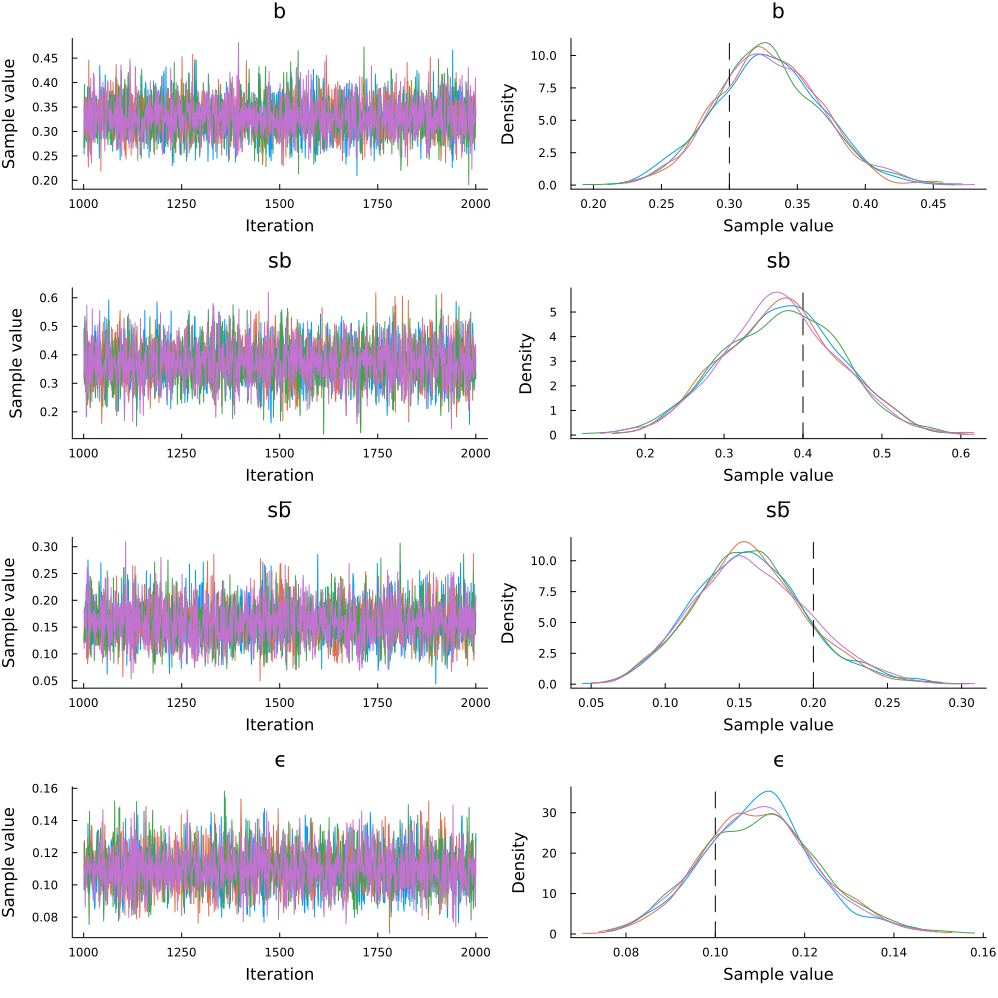

Bayesian Parameter Estimation
The purpose of this tutorial is to demonstrate how to perform Bayesian parameter estimation of the True and Error model (TET; Birnbaum & Quispe-Torreblanca, 2018) using the Turing.jl package.
Full Code
You can reveal copy-and-pastable version of the full code by clicking the ▶ below.
Show Full Code
using MultistageTrueAndErrorModels
using Random
using StatsPlots
using Turing
Random.seed!(685)
model = MultistageTrueErrorModel(;
b = 0.3,
sb = 0.4,
sf = 0.2,
ϵ = fill(0.1, 4)
)
data = rand(model, 200)
@model function model1(data::Vector{<:Integer})
b ~ Uniform(0, 1)
sb ~ Uniform(0, 1)
sf ~ Uniform(0, 1)
ϵ ~ Uniform(0, 0.5)
ϵ′ = fill(ϵ, 4)
data ~ MultistageTrueErrorModel(; b, sb, sf, ϵ = ϵ′)
return (; b, sb, sf, ϵ = ϵ′)
end
chains = sample(model1(data), NUTS(1000, 0.65), MCMCThreads(), 1000, 4)
post_plot = plot(chains, grid = false)
vline!(
post_plot,
[missing 0.3 missing 0.4 missing 0.2 missing 0.10],
color = :black,
linestyle = :dash
)Load Packages
The first step is to load the required packages. You will need to install each package in your local environment in order to run the code locally. We will also set a random number generator so that the results are reproducible.
using MultistageTrueAndErrorModels
using Random
using StatsPlots
using Turing
Random.seed!(685)Generate Data
For a description of the decision making task, please see the description in the model overview. In the code block below, we will create a model object and generate responses from 200 simulated subjects.
$b = .30$
$s_b = .40$
$s_f = .20$
$\epsilon_{1} = \epsilon_{2} = \epsilon_{3} =\epsilon_{4} = .10$
model = MultistageTrueErrorModel(;
b = 0.3,
sb = 0.4,
sf = 0.2,
ϵ = fill(0.1, 4)
)
data = rand(model, 200)16-element Vector{Int64}:
17
17
9
67
1
4
2
9
6
3
0
13
32
0
4
16In the output above, we see the response vector has 16 elements, which correspond to response frequencies for the 16 response patterns:
$\{(B,B,B,B),(F,B,B,B) \dots (F,F,F,F)\},$
where $B$ and $F$ correspond to backward and forward induction strategies, respectively.
The Turing Model
The prior distributions for the parameters are as follows:
$b \sim \mathrm{uniform}(0, 1)$
$sb \sim \mathrm{uniform}(0, 1)$
$sf \sim \mathrm{uniform}(0, 1)$
$\epsilon \sim \mathrm{uniform}(0, .5)$
with the constraint that $\epsilon_{1} = \epsilon_{2} = \epsilon_{3} =\epsilon_{4} = \epsilon$
@model function model1(data::Vector{<:Integer})
b ~ Uniform(0, 1)
sb ~ Uniform(0, 1)
sf ~ Uniform(0, 1)
ϵ ~ Uniform(0, 0.5)
ϵ′ = fill(ϵ, 4)
data ~ MultistageTrueErrorModel(; b, sb, sf, ϵ = ϵ′)
return (; b, sb, sf, ϵ = ϵ′)
endEstimate the Parameters
Now that the Turing model has been specified, we can perform Bayesian parameter estimation with the function sample. We will use the No U-Turn Sampler (NUTS) to sample from the posterior distribution. The inputs into the sample function below are summarized as follows:
model(data): the Turing model with data passedNUTS(1000, .65): a sampler object for the No U-Turn Sampler for 1000 warmup samples.MCMCThreads(): instructs Turing to run each chain on a separate threadn_iterations: the number of iterations performed after warmupn_chains: the number of chains
# Estimate parameters
chains = sample(model1(data), NUTS(1000, 0.65), MCMCThreads(), 1000, 4)The output below shows the mean, standard deviation, effective sample size, and rhat for each of the five parameters. The pannel below shows the quantiles of the marginal distributions.
Chains MCMC chain (1000×18×4 Array{Float64, 3}):
Iterations = 1001:1:2000
Number of chains = 4
Samples per chain = 1000
Wall duration = 1.66 seconds
Compute duration = 6.62 seconds
parameters = b, sb, sf, ϵ
internals = n_steps, is_accept, acceptance_rate, log_density, hamiltonian_energy, hamiltonian_energy_error, max_hamiltonian_energy_error, tree_depth, numerical_error, step_size, nom_step_size, logprior, loglikelihood, logjoint
Summary Statistics
parameters mean std mcse ess_bulk ess_tail rhat ess_per_sec
Symbol Float64 Float64 Float64 Float64 Float64 Float64 Float64
b 0.3287 0.0387 0.0005 6249.5981 2821.8812 0.9998 943.6204
sb 0.3726 0.0745 0.0010 5624.1605 3552.0068 1.0006 849.1863
sf 0.1574 0.0378 0.0005 5716.3697 2874.7972 1.0005 863.1088
ϵ 0.1099 0.0128 0.0002 6022.9720 3108.1984 1.0020 909.4024
Quantiles
parameters 2.5% 25.0% 50.0% 75.0% 97.5%
Symbol Float64 Float64 Float64 Float64 Float64
b 0.2544 0.3032 0.3270 0.3540 0.4070
sb 0.2300 0.3208 0.3735 0.4229 0.5168
sf 0.0879 0.1311 0.1555 0.1812 0.2376
ϵ 0.0857 0.1011 0.1099 0.1178 0.1370Evaluation
It is important to verify that the chains converged. We see that the chains converged according to $\hat{r} \leq 1.05$, and the trace plots below show that the chains look like "hairy caterpillars", which indicates the chains did not get stuck.
post_plot = plot(chains, grid = false)
vline!(
post_plot,
[missing 0.3 missing 0.4 missing 0.2 missing 0.10],
color = :black,
linestyle = :dash
)
The data-generating parameters are represented as black vertical lines in the density plots. As expected, the posterior distributions are centered near the data-generating parameters. Given that the data-generating and estimated model are the same, we would expect the posterior distributions to be near the data-generating parameters.
References
Birnbaum, M. H., & Quispe-Torreblanca, E. G. (2018). TEMAP2. R: True and error model analysis program in R. Judgment and Decision Making, 13(5), 428-440.
Deng, W., Kellen, D., & Hotaling, J. M. (2026). Toward the cognitive modeling of dynamic decision making. Psychonomic Bulletin & Review, 33(4), 127.
Lee, M. D. (2018). Bayesian methods for analyzing true-and-error models. Judgment and Decision Making, 13(6), 622-635.